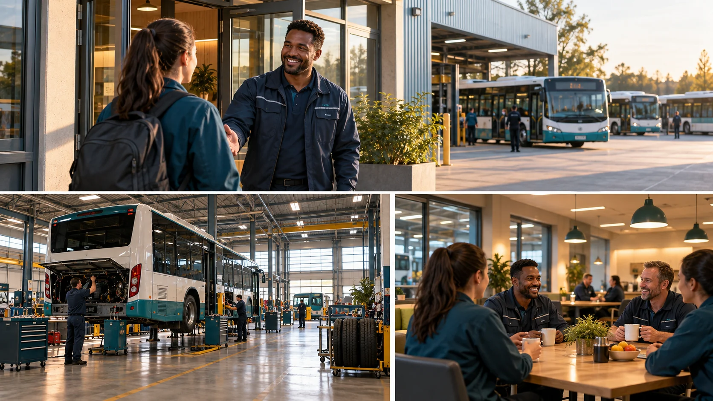

P27 · 중급 · 제작·활용
Stagecoach: 채용 영상에서 일터를 보여주기
구직자의 질문을 공간·직원·업무 행동을 보여주는 촬영 항목으로 바꾼다.
그림에서 확인할 세 가지시설 규모보다 일터에서의 경험을 보여준다.
1도착하는 직원
가상 차고지의 입구와 직원이 향하는 방향을 본다. 관객이 처음 온 사람의 관점에서 공간의 시작을 이해할 수 있는지 판단한다.
2업무 공간
버스와 정비 공간의 관계를 살핀다. 큰 차량이 있다는 정보에서 나아가 어떤 일이 이곳에서 일어나는지 읽을 단서를 찾는다.
3함께 일하는 사람
직원들이 함께 있는 그림에서 협업이나 대화가 보이는지 본다. 인원을 배치했다는 사실만으로 일터 문화 전체를 설명하지 않는다.
촬영 설계
촬영을 이렇게 설계한다
사람에게 먼저 묻기
교육 제안: 직원에게 일터에서 중요한 순간과 새 지원자가 오해하기 쉬운 점을 묻는다. 그 답을 촬영 질문으로 바꿔 건물 외형만 보여주는 목록에서 벗어나도록 한다.
경험에 맞는 컷 선정
교육 제안: 도착·준비·협업·출발 중 필요한 경험을 골라 공간과 사람을 함께 배치한다. FPV가 지나갈 수 있다는 이유만으로 모든 통로를 촬영할 필요는 없다.
설명되지 않는 부분 보완
교육 제안: 공간 이동만으로 업무가 안 읽히면 직원의 행동이나 짧은 설명을 추가한다. 화려한 투어의 인상과 실제 업무 이해가 같은 결과인지 따로 검토한다.
Stagecoach 채용 영상은 직원 면담 뒤 스토리보드를 만들고 차고지 FPV를 포함했다.
원본 영상Stagecoach: 채용 영상에서 일터를 보여주기
1. 지원자의 질문
원본을 보고 출근해서 어디로 가고 누구와 일할지 답해 본다. 시설 소개만으로 알 수 없는 직원 경험이 어떤 장면에서 보완되는지 찾는다.
2. 사람과 시설의 비중
버스와 건물에 비해 직원이 얼마나 읽히는지 관찰한다. 시설의 규모는 남지만 사람의 행동이 사라지는 구간이 있는지 판단한다.
3. 원작의 업무 설명
원본에서 FPV 장면이 채용 메시지의 어떤 부분을 돕는지 본다. 지원자 증가나 채용 효과를 제작 소개만으로 확정하지 않는다.
재생이 제한되면 원본 영상 새 창을 이용하세요.
제작진 설명 · 한국어 요약 번역
직원 면담과 제작 계획
의뢰와 준비
원문 요약 번역: Stagecoach South가 채용 영상을 의뢰했다고 설명한다.
제작사는 먼저 차고지에서 직원들을 만났고 이어 스토리보드와 제작 계획을 세웠다.
제작 형식
촬영 지역은 포츠머스이며 결과물에는 차고지를 지나는 실내 FPV 투어가 들어갔다.
학습안 범위
세부 동선과 채용 성과는 본문에 없어 지원자 관점의 장면 구성은 교육 제안이다.
제작진 설명 · 한국어 요약 번역
실내 FPV 장비 목록
실내 장비
원문 요약 번역: 장비 목록에는 좁은 실내 추적에 맞는 GEPRC CineLog 25가 있다.
카메라 역할
스토리보드 기반 작업의 주 카메라는 RED Komodo 6K, 지상 사진과 보조 영상은 FUJI X-T4로 적혀 있다.
미공개 사항
이 목록이 이 프로젝트의 실제 사용 장비인지는 본문이 구분하지 않는다.
일정, 예산, 인원도 공개되지 않는다.
Kling 프롬프트단문 인과 체인 · 16:9
내가 직접 만들어 본다
직원의 도착에서 업무와 협업, 출발로 이어지는 행동이 일터의 경험을 만든다는 인과를 지시한다.
- S01버스 차고지 입구로 직원 한 명이 걸어 들어온다.
- S02영상은 하나의 연속 쇼트다.
- S03처음 10초 동안 드론은 직원의 뒤를 따라 입구를 지난다.
- S04직원이 정비 공간으로 향하기 때문에 드론도 따라간다.
- S05정비 공간에는 큰 버스 한 대가 서 있다.
- S06직원이 버스 아래의 부품을 살핀다.
- S07다음 10초 동안 동료 직원이 다가와 부품을 가리킨다.
- S08두 직원이 부품을 함께 교체한다.
- S09드론은 두 사람의 손과 버스를 함께 담는다.
- S10그래서 이곳의 업무가 읽힌다.
- S11마지막 10초 동안 교체가 끝나자 버스 시동이 걸린다.
- S12버스가 차고지 밖으로 출발한다.
- S13직원들이 떠나는 버스를 바라본다.
[네거티브]
- 직원이 입구가 아닌 건물 안에서 시작하는 것 금지
- 중간 컷으로 장면이 끊기는 것 금지
- 드론이 직원을 앞질러 입구만 찍는 것 금지
- 직원과 드론이 서로 다른 방향으로 가는 것 금지
- 버스 대신 승용차가 서 있는 것 금지
- 직원이 부품 대신 버스 외관만 닦는 것 금지
- 동료가 부품 아닌 다른 곳을 가리키는 것 금지
- 두 직원이 부품 없이 빈손으로 서 있는 것 금지
- 드론이 얼굴만 가까이 찍고 일을 놓치는 것 금지
- 정비 대신 청소나 휴식으로 읽히는 것 금지
- 교체 도중에 버스가 먼저 출발하는 것 금지
- 버스가 차고지 안에서 계속 맴도는 것 금지
- 직원들이 버스를 등지고 서 있는 것 금지
결과에서 볼 것
- 도착에서 업무까지 직원의 행동이 이어졌는가
- 협업이 부품 교체라는 행동으로 보였는가
- 공간이 아니라 일하는 모습이 남았는가